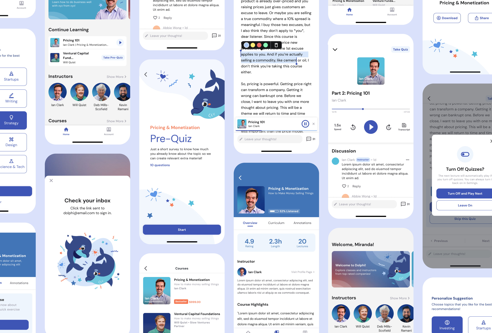
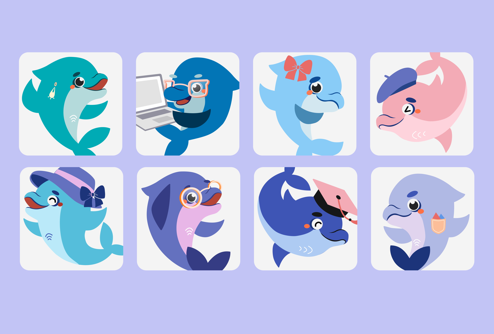
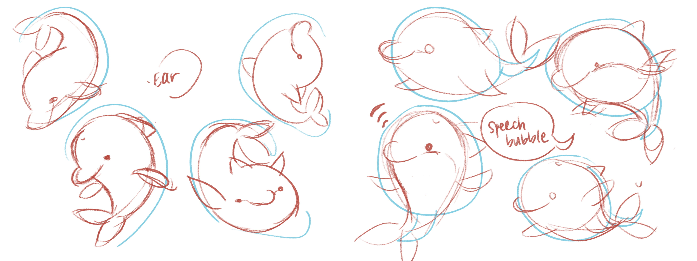
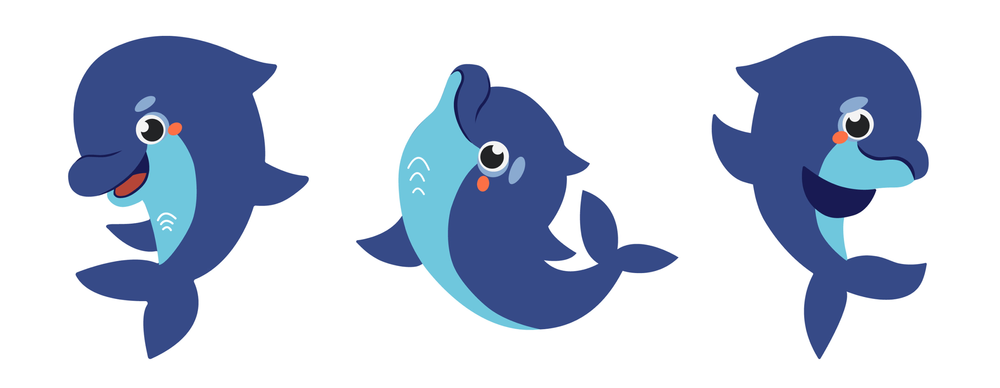
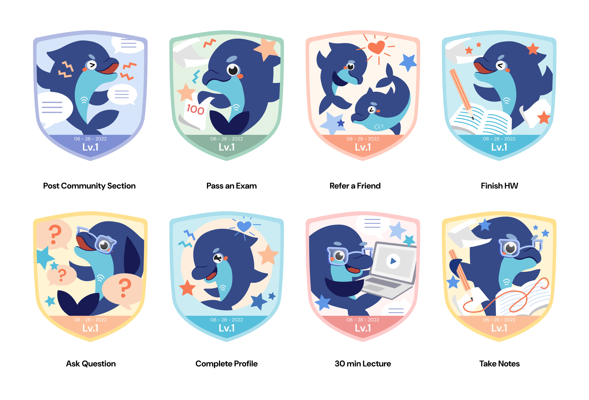
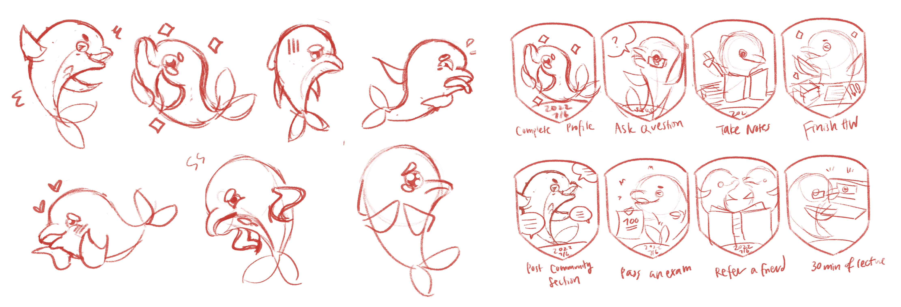
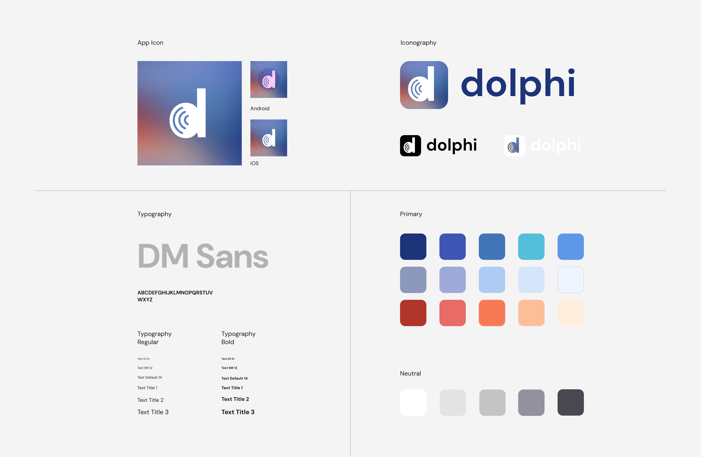
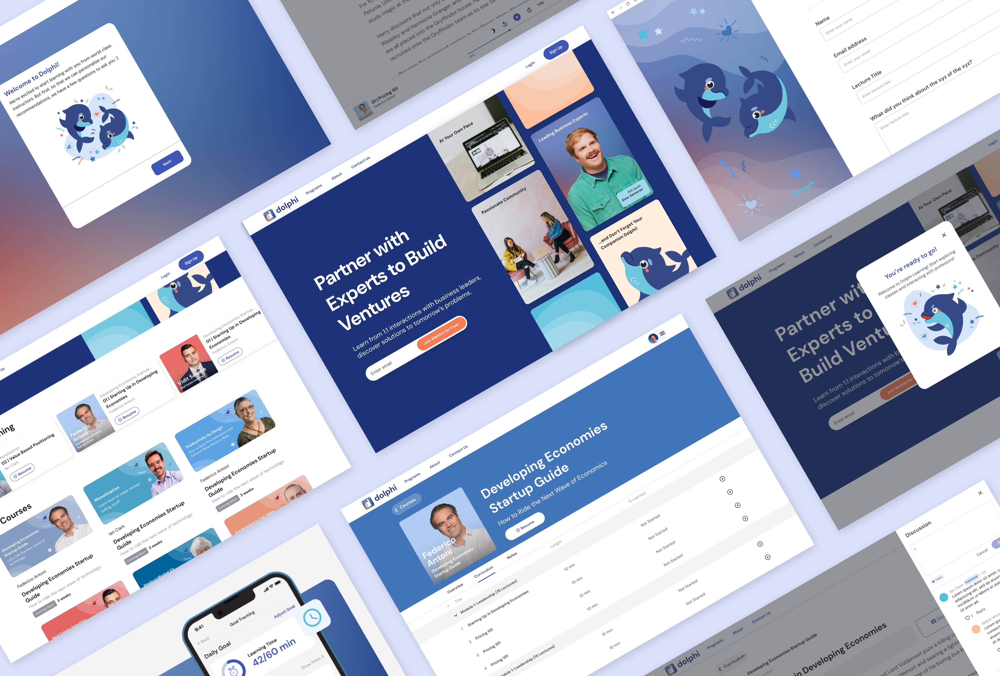

June 2023
Founding designer on a team of three. Owning 0→1 brand identity, design system, mobile UX, marketing site, deck visuals.

Entrepreneurship learning often takes a serious tone. We wanted ours to feel fun. As the only designer on a three-person team, making it that way was on me—no brand, no system, no playbook. So I started with a character, not screens: a dolphin named Dolphi. From that one bet, I grew the whole ecosystem—identity, design system, badges, and the interfaces people learned in.
A system built to ship fast. Launched in 6 months · ~2 years is standard
Committed to investing when we opened for fundraising in Q1 '23
Collaborated with CEO/CTO directly on strategy and growth UX
Learning has to feel smart enough to trust and warm enough to come back to. Dolphi—curious, fluid, a little playful—became that balance: a companion that could grow up alongside the user and stretch into badges, onboarding, and marketing without losing itself.



Then Dolphi got a job. The easy path was points and streaks. I pushed back—for founders, that reads as work. So I turned the character into achievement badges. Every badge marks something real: a finished course, a skill that clicked.


One character and a set of badges only hold together with rules behind them. There was no system to inherit, so I wrote one. Dolphi's traits became the decisions behind every screen:

This is where the system had to earn its keep. People bounce between reading, listening, and stolen five-minute sessions—so each screen below puts the type, color, and badges to work against a real problem.
Design 1
Dolphi greets you at the door—the mascot leads the welcome flow, turning a cold sign-up into a first hello and setting the tone for everything after.
Shipped — Dolphi-led onboarding as the brand's first impression.
Design 2
Reading and listening live under one roof, so switching modes never feels like changing apps.
Shipped — unified nav and player layout.
Design 3
Inline multiple-choice checks break up the reading, and end-of-lecture quizzes seal it in—so what you learn actually sticks instead of slipping away.
Shipped — inline MCQs and end-of-lecture quizzes.
Because it all started with one character, the rest came easily. The same type, color, and badge art carried onto the web, marketing pages, and investor decks. No starting over for each surface.
As the first designer, my earliest decisions shaped everything downstream. Betting on one character—before a single screen—let brand, product, and pitch deck speak the same language.
